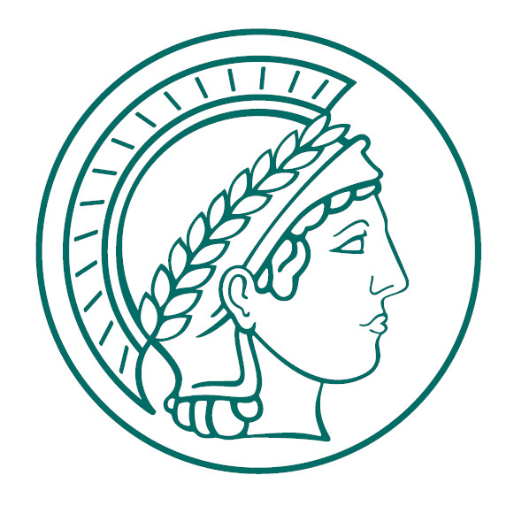

Current
May 2026 — PresentMaster's Thesis Project Intern

Max Planck Institute of Biophysics, Frankfurt // Dr. Uris RosProjectMicromechanics of Membrane Blebs in Regulated Necrotic Cell Death
- Investigating time-dependent biophysical profiles (tension, rigidity, permeability) in giant plasma membrane vesicles (GPMVs) across regulated cell death channels.